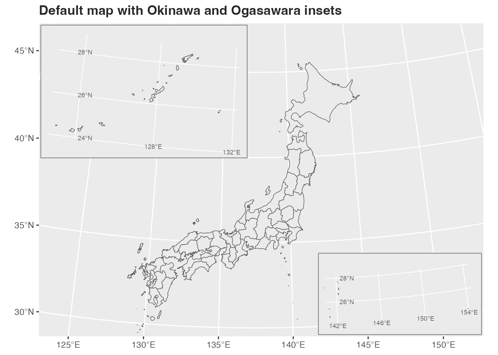
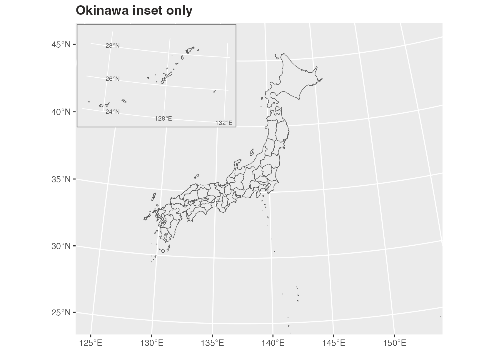
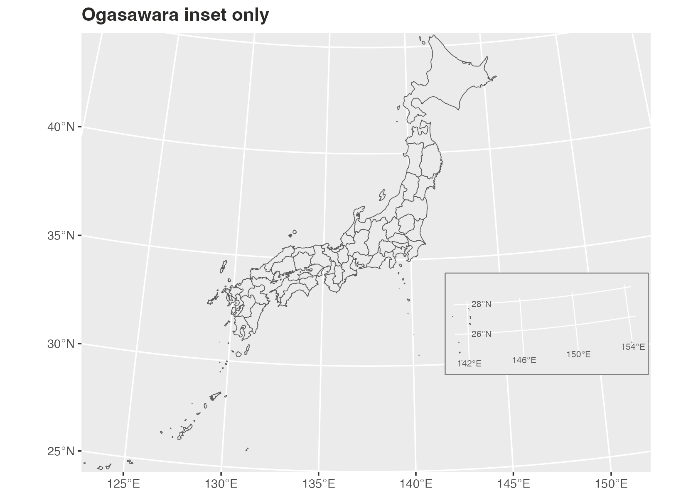
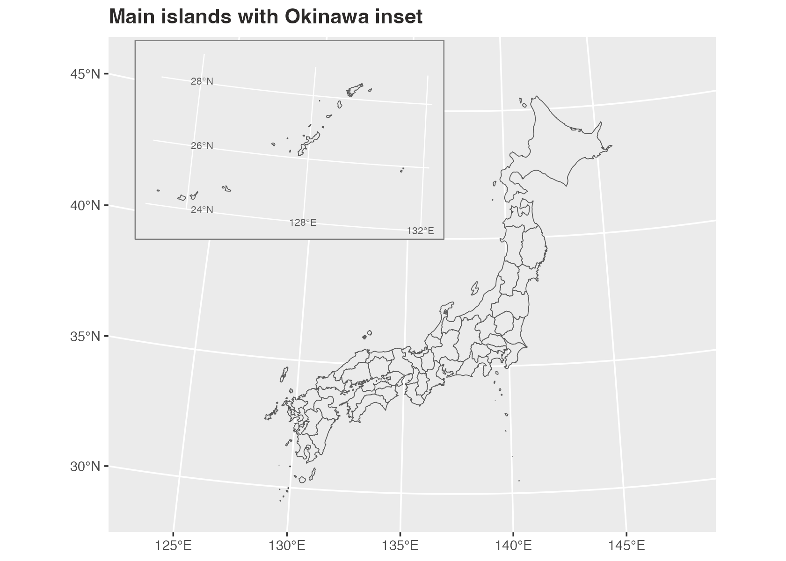
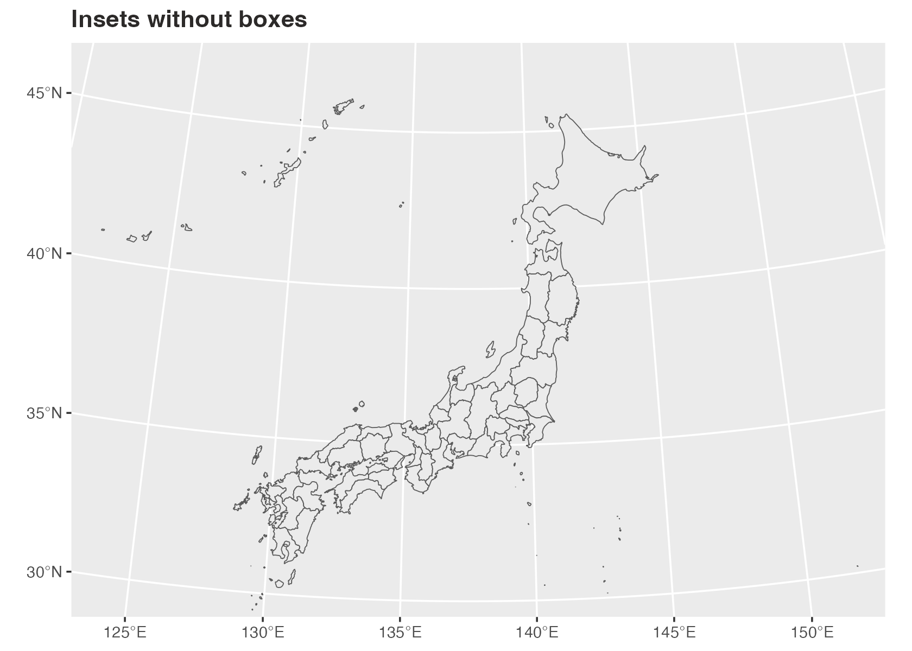
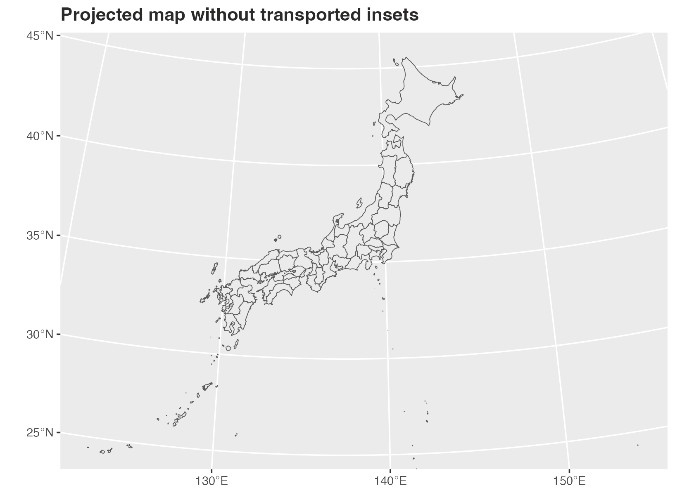
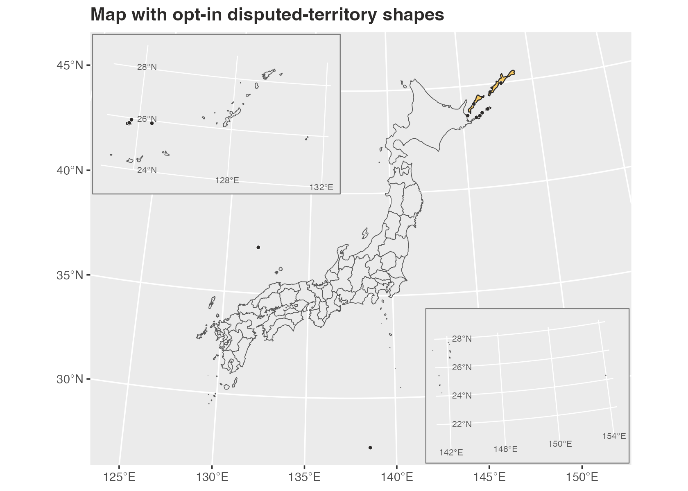

By default, jpmap transports Okinawa and Ogasawara into
visible inset locations.
plot_jpmap("prefecture") +
labs(title = "Default map with Okinawa and Ogasawara insets") +
theme(
plot.title = element_text(face = "bold", color = "#2C2A29")
)
Remove One Inset
Use ogasawara = FALSE when you only want Okinawa
moved.
plot_jpmap(
"prefecture",
ogasawara = FALSE
) +
labs(title = "Okinawa inset only") +
theme(
plot.title = element_text(face = "bold", color = "#2C2A29")
)
Use okinawa = FALSE when you only want Ogasawara
moved.
plot_jpmap(
"prefecture",
okinawa = FALSE
) +
labs(title = "Ogasawara inset only") +
theme(
plot.title = element_text(face = "bold", color = "#2C2A29")
)
Adjust The Map Frame
Use xlim and ylim to set longitude/latitude
limits. You can also set axis breaks and labels. This example keeps the
main islands and Okinawa while dropping the Ogasawara inset.
plot_jpmap(
"prefecture",
ogasawara = FALSE,
xlim = c(122, 149),
ylim = c(28.5, 47),
x_breaks = seq(125, 145, 5),
y_breaks = seq(30, 45, 5),
x_labels = function(x) paste0(x, "\u00b0E"),
y_labels = function(y) paste0(y, "\u00b0N")
) +
labs(title = "Main islands with Okinawa inset") +
theme(
plot.title = element_text(face = "bold", color = "#2C2A29")
)
Remove The Boxes
Set inset_boxes = FALSE to keep the transported islands
but remove the visual frames. When boxes are shown, jpmap
masks the ordinary main-panel graticules inside each box and draws local
longitude/latitude lines for the transported island group. Those labels
are the islands’ original coordinates, not the destination coordinates
of the inset box.
plot_jpmap(
"prefecture",
inset_boxes = FALSE
) +
labs(title = "Insets without boxes") +
theme(
plot.title = element_text(face = "bold", color = "#2C2A29")
)
Use Literal Geography
Set inset = FALSE to keep every geometry in its
projected geographic location.
plot_jpmap(
"prefecture",
inset = FALSE
) +
labs(title = "Projected map without transported insets") +
theme(
plot.title = element_text(face = "bold", color = "#2C2A29")
)
Add Disputed-Territory Shapes
Areas discussed in Japan territorial-dispute references are excluded
by default. Set territorial_disputes = TRUE to add
cartographic island/reef shapes for Northern Territories,
Okinotorishima, Senkaku Islands, and Takeshima / Liancourt Rocks. You
can also pass a character vector to include only selected regions, such
as territorial_disputes = "senkaku" or
territorial_disputes = c("senkaku", "takeshima").
plot_jpmap() gives opt-in disputed shapes a separate
fill and dot overlay so small islands and reefs remain visible at the
default scale. Use disputed_fill,
disputed_color, or disputed_dots = FALSE to
change that styling.
plot_jpmap(
"prefecture",
territorial_disputes = TRUE
) +
labs(title = "Map with opt-in disputed-territory shapes") +
theme(
plot.title = element_text(face = "bold", color = "#2C2A29")
)
What The Boxes Mean
The inset boxes are visual guide frames for the transported island
groups. They are sized to cover the Okinawa and Ogasawara source extents
that jpmap transports into the default map frame. The
longitude/latitude labels drawn inside a box describe the island group’s
true coordinates before transport. The boxes themselves are still
display frames, not legal boundary extents.
For Okinawa municipal maps, the bundled 2024 MLIT N03 Okinawa layer
is transported as Okinawa. For Ogasawara, the default box also covers
the remote Ogasawara pieces present in the bundled prefecture layer,
such as Minamitorishima. Use inset = FALSE when literal
geographic placement matters more than a compact display.
When territorial_disputes = TRUE includes
Okinotorishima, the Ogasawara box is expanded so the opt-in
Okinotorishima reef shape remains visible. These disputed-territory
shapes are not official boundary polygons.